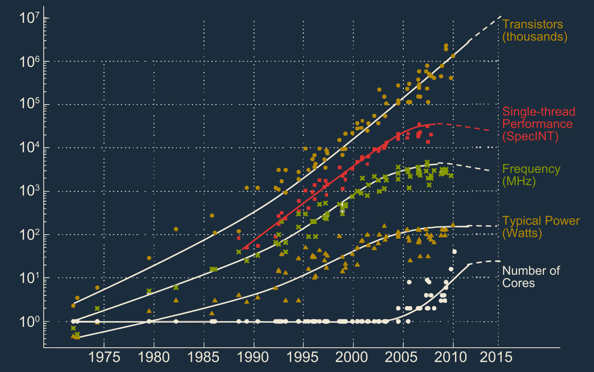
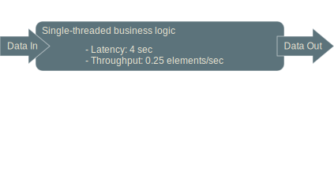
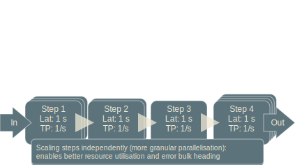
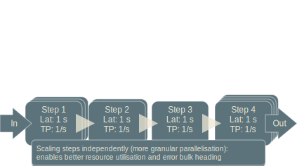
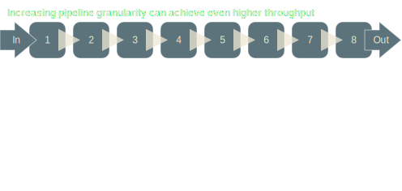
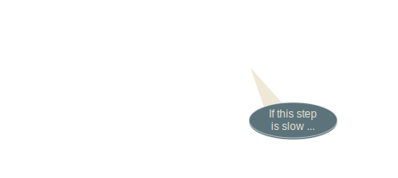
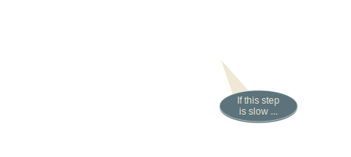
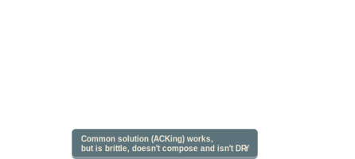
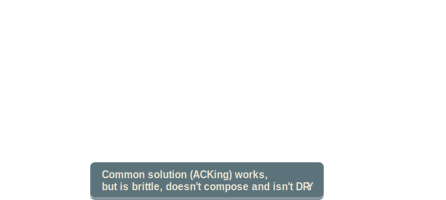

Introduction to Reactive Streams
⇗ nescala 2015-01-31@boston
Mathias Doenitz
/
/
This presentation: http://spray.io/nescala2015/rs/
Our Hardware base is changing!

The new opponent: Amdahl's Law

Parallelisation is key!
Our old tools don't cut it
- Threads (programmed directly)
- high memory overhead
- starting/stopping is expensive
- inter-thread communication entirely left to the user
- Locks/Mutexes/Semaphores/`synchronized`/`volatile`
- too little sync: race conditions, wrong results
- too much sync: deadlocks, poor performance
- very hard to use correctly
Too low-level!
Selected concurrency abstractions


Reactive Streams Basics
- What is a stream?
- Ephemeral flow of data items, commands,
other elements of any kind - Focused on describing transformation
and combination/composition - Possibly unbounded in size
- NOT a data structure!
Common Uses of Streams
- Bulk data transfer
- Real-time data sources
- Batch processing of large data sets
- Monitoring and analytics
- Structuring and Scaling Business Logic
Example: Scaling Logic


 

Taking things further



Fine-grained Parallelisation is key!
Common problem: Backpressure
 


 

Critical Point: Async Boundary


Async Boundary
- Data elements flow downstream
- Demand flows upstream
- Data items flow only when there is demand
- Recipient is in control of incoming data rate
- Data in flight is bounded by signaled demand
Dynamic Push/Pull
- “Push” behavior when consumer is faster
- “Pull” behavior when producer is faster
- Switches automatically between these
- Batching demand allows batching data
Async Boundaries are Everywhere
- Between actors
- Between threads
- Between CPUs
- Between network nodes
- Between applications
Pipeline Processing Done Right


Continuous Pipelines across Machines


The Reactive Streams Project
- Participants: Engineers from
- Netflix
- Red Hat
- Pivotal
- Typesafe
Goals
- An common, minimal standard interface
for handing data across async boundaries - Complete freedom for many idiomatic APIs
- Interoperability to make best use of efforts
- You should be able to say:
twitterStream .produceTo(rxjavaObservable) .produceTo(reactorStream) .produceTo(akkaStream)
Reactive Stream API
public interface Publisher<T> {
public void subscribe(Subscriber<? super T> s);
}
public interface Subscription {
public void request(long n);
public void cancel();
}
public interface Subscriber<T> {
public void onSubscribe(Subscription s);
public void onNext(T t);
public void onError(Throwable t);
public void onComplete();
}
Not for user consumption!
(Use RS Impl Library instead)
akka-stream: basic concepts
- `Source[T]`: the open end of a pipeline producing `T`s
- `Sink[T]`: an "end-piece" for taking in `T`s
- `Flow[A, B]`: an unconnected piece of pipeline
- Generally, all abstractions are re-useable
- "Materialization":
The process of starting an actual stream instance
akka-stream: simple stream example
Source(stockTickerPublisher) // Source[Tick]
.filter(_.symbol == "AAPL") // Source[Tick]
.buffer(100000, OverflowStrategy.DropHead) // Source[Tick]
.splitWhen(x => isNewDay(x.timeStamp)) // Source[Source[Tick]]
.headAndTail // Source[(Tick, Source[Tick])]
.map { case (head, tail) =>
head -> tail.groupedWithin(1000, 1.second)
} // Source[(Tick, Source[Seq[[Tick]]])]
.via(someFlow) // Source[RichTick]
.map(toCandleStickChartColumn) // Source[CandleStickChartColumn]
.to(candleStickChartSink) // RunnableFlow
.run() // MaterializedMap
akka-stream: flow graph example

FlowGraph { implicit b ⇒
val bcast = Broadcast[T]
val merge = Merge[T]
source ~> f1 ~> bcast ~> f2 ~> merge ~> f3 ~> sink
bcast ~> f4 ~> merge
}.run()
Reactive Streams: Status
- Reactive Streams API Spec 1.0 almost complete
- TCK (Technology Compatibility Kit) available
- Several implementations in various states of progress
- For Scala:
akka-stream currently the most idiomatic - APIs becoming more stable,
a lot of new ground had to be broken